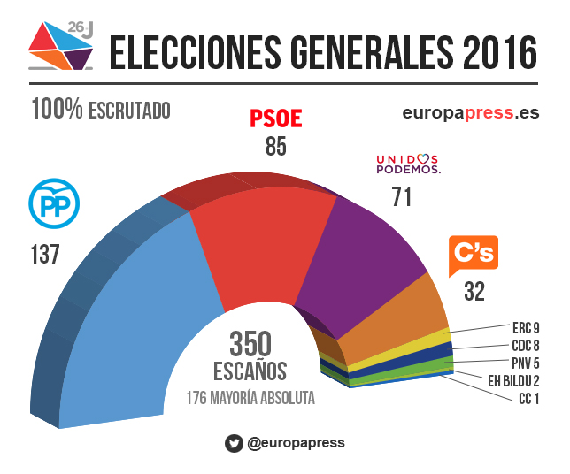

Fernando
Tirado Bulnes
Menu
Programas
Líderes
Estadísticas
Información diversa
Empecemos
Resultados elecciones 2016

PP - 33.03%
PSOE - 22.66%
Unidos Podemos - 22.10%
Ciudadanos - 13.05%
ERC - 2.63%
CDC - 2.01%
Si tienes dudas, tenemos una encuesta objetiva que puede ayudarte:
TEST